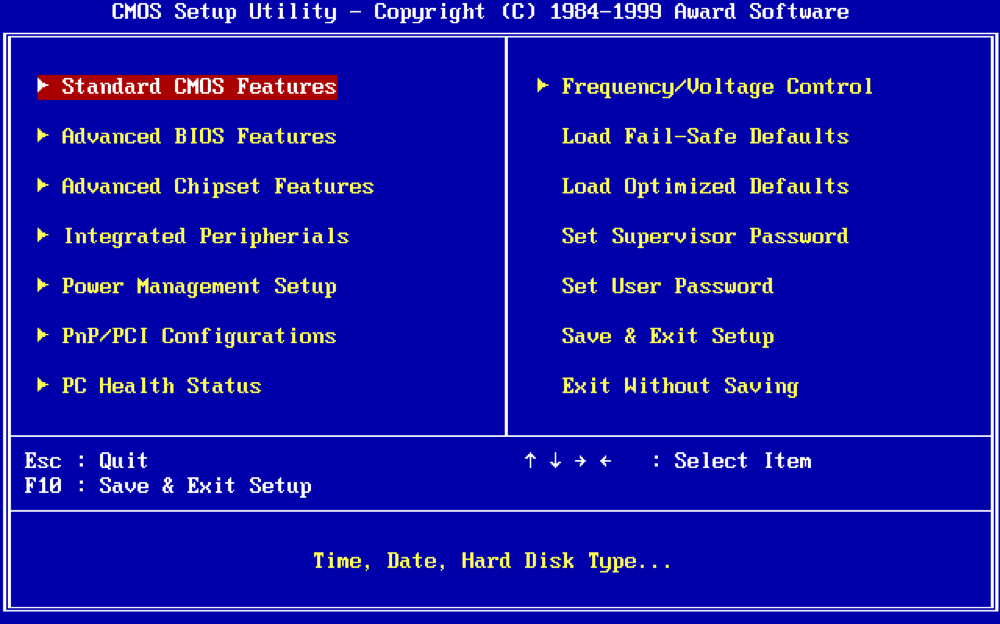

las funciones de la BIOS
La BIOS no es solo un conjunto de instrucciones que permiten encender una computadora; es el cerebro inicial que coordina, revisa y conecta todas las piezas del sistema. Su papel es esencial, ya que actúa como un traductor entre los componentes físicos (hardware) y el software, asegurando que todo funcione en armonía desde el primer momento del arranque.
Desde que se presiona el botón de encendido, la BIOS comienza a ejecutar una serie de tareas precisas y ordenadas. Estas funciones permiten que el equipo reconozca los componentes conectados, detecte errores, configure los dispositivos y, finalmente, entregue el control al sistema operativo. A continuación se explican las funciones principales de la BIOS, su importancia y cómo han evolucionado con el tiempo.
1. Prueba de encendido (POST)
La primera función que realiza la BIOS al iniciar el equipo es el POST (Power-On Self Test). Este proceso verifica que todos los componentes fundamentales del sistema estén presentes y funcionen correctamente. Entre los elementos que se revisan están la memoria RAM, el teclado, el disco duro, el procesador, la tarjeta de video y otros dispositivos básicos.
Si durante esta prueba algo falla, la BIOS emite una serie de sonidos o códigos (llamados beeps) que indican el tipo de error. Por ejemplo, un pitido largo y dos cortos suelen señalar un problema con la tarjeta gráfica, mientras que una secuencia continua puede indicar fallos en la memoria RAM. De esta forma, el POST actúa como un sistema de diagnóstico automático que alerta al usuario sobre posibles fallos de hardware antes de iniciar el sistema operativo.
2. Inicialización del hardware
Una vez superado el POST, la BIOS procede a inicializar los componentes del hardware. Esto implica encenderlos, establecer sus configuraciones básicas y asegurarse de que puedan comunicarse correctamente con el resto del sistema. Durante esta fase, la BIOS detecta dispositivos como discos duros, unidades de estado sólido (SSD), unidades de CD/DVD, tarjetas de red y periféricos conectados.
Por ejemplo, la BIOS activa la tarjeta gráfica para mostrar información en pantalla, habilita la memoria RAM y define los canales de comunicación con el procesador. Además, configura los buses del sistema (como PCIe o SATA) y asigna recursos de hardware, como direcciones de memoria o interrupciones (IRQ), para evitar conflictos entre dispositivos.
3. Carga del gestor de arranque (Boot Loader)
Una vez que todos los dispositivos están listos, la BIOS busca un medio de arranque, es decir, un dispositivo que contenga un sistema operativo. Este proceso se conoce como boot. La BIOS sigue el orden establecido por el usuario (por ejemplo: primero unidad USB, luego disco duro, después DVD). Cuando encuentra un dispositivo válido, carga en memoria el sector de arranque que contiene las instrucciones para iniciar el sistema operativo.
Este paso es esencial porque marca la transición entre el control de la BIOS y el del sistema operativo. Sin un gestor de arranque funcional, la computadora no podría cargar Windows, Linux u otro sistema. Además, la BIOS permite cambiar este orden de arranque desde su menú de configuración, lo que resulta útil para instalar nuevos sistemas o reparar fallos.
4. Configuración del sistema
Otra función importante de la BIOS es permitir que el usuario acceda a un entorno de configuración interna conocido como Setup. Desde allí se pueden modificar parámetros fundamentales del sistema, como la fecha y hora, la velocidad del procesador, el orden de arranque, la gestión de energía y la detección de periféricos.
Por ejemplo, si una computadora no reconoce un disco duro, es posible entrar al Setup para habilitarlo o cambiar el modo de operación (IDE, AHCI o RAID). También se pueden ajustar opciones de seguridad, establecer contraseñas o habilitar el arranque seguro para evitar la ejecución de software malicioso antes de cargar el sistema operativo.
5. Administración de energía y rendimiento
La BIOS también se encarga de controlar cómo el hardware gestiona la energía. A través de tecnologías como ACPI (Advanced Configuration and Power Interface), permite que el sistema entre en modos de suspensión, apagado o ahorro energético sin comprometer el rendimiento.
Además, en sistemas modernos, la BIOS ofrece opciones avanzadas de rendimiento, como el control de la velocidad del ventilador, el voltaje del procesador o el uso de perfiles de rendimiento (por ejemplo, modo silencioso o turbo). Estas configuraciones son fundamentales para equilibrar consumo, temperatura y eficiencia.
6. Seguridad del sistema
Con el tiempo, la BIOS incorporó funciones orientadas a la seguridad. Entre ellas se encuentran la protección mediante contraseña para evitar que terceros accedan al Setup, el arranque seguro (Secure Boot), y la validación del firmware para impedir modificaciones no autorizadas.
En equipos empresariales o modernos, la BIOS también puede controlar la verificación de hardware en red, detectando si el sistema ha sido manipulado. Esto es especialmente útil en entornos donde se manejan datos sensibles o confidenciales.
7. Interfaz entre hardware y software
Una de las funciones más fundamentales de la BIOS es servir de enlace entre los componentes físicos del equipo y el sistema operativo. Gracias a pequeños controladores integrados, el sistema puede reconocer y utilizar correctamente dispositivos como teclados, discos, puertos USB y tarjetas gráficas, incluso antes de que los controladores del sistema operativo se activen.
Sin esta capa intermedia, el sistema operativo no sabría cómo comunicarse con el hardware al iniciar, lo que impediría que la computadora funcionara. Por eso, se dice que la BIOS actúa como el “intérprete” que traduce las órdenes del software para que el hardware las entienda.